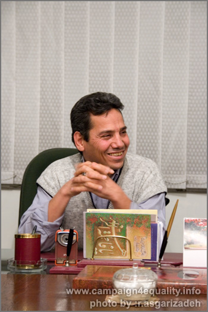
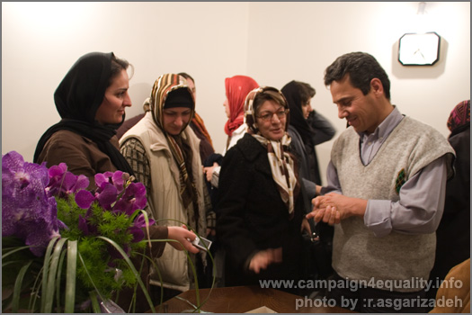
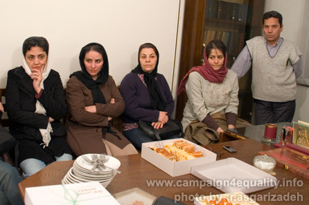

پذيرش > مقالات > خارج از چارچوب > عبدالفتاح سلطانی: چندان شب یلدای وطن طول کشید کزآمدن سپیده نومید شدیم
 دیدار برخی فعالان کمپین با عبدالفتاح سلطانی برنده جایزه نورنبرگ دیدار برخی فعالان کمپین با عبدالفتاح سلطانی برنده جایزه نورنبرگ

 عبدالفتاح سلطانی: چندان شب یلدای وطن طول کشید کزآمدن سپیده نومید شدیم عبدالفتاح سلطانی: چندان شب یلدای وطن طول کشید کزآمدن سپیده نومید شدیم
2 دی 1387 - گزارش : آیدا سعادت - نسخه قابل چاپ

تغییر برای برابری :عبدالفتاح سلطانی، حقوقدان، عضو کانون مدافعان حقوق بشر و اولین برنده ی ایرانی جایزه حقوق بشر نورنبرگ در شب یلدای امسال میزبان جمعی از فعالان کمپین یک میلیون امضا بود که به پاسداشت تلاش های او برای دفاع از حقوق بشر و حمایت بی شائبه اش از فعالان جنبش زنان در سالهای اخیر در دفتر وکالتش با او دیدار کردند.
در این دیدار که با شب یلدا مقارن بود فعالان کمپین یک میلیون امضا هدیه ای را به منظور تقدیر از تلاش های عبدالفتاح سلطانی به وی تقدیم کردند.

"چندان شب یلدای وطن طول کشید
کز آمدن سپیده نومید شدیم
شبگیر ز خاک گور برخاست و ما
پنداشته هان ! سپیده از راه رسید"
عبدالفتاح سلطانی با خواندن این شعر و تبریک شب یلدا به حاضرین از تاثیر تلاش برای آزادی زنان در آزادی مردان گفت: "جنبش زنان در سالهای اخیر به همت زنانی که شایسته ی تقدیر هستند بسیار فعال بوده و گام های بسیار مهمی را برای رها شدن از سنت های غیر انسانی که نابرابری را ترویج می کند و برای رهایی از شرایط مردسالارانه ای که در طی چندین هزار سال حاکم بر جامعه ی ما است برداشته است. و من فکر می کنم که آزادی زنان از سنت های نابرابر و تبعیض آمیز آزادی مردان را هم در بر خواهد داشت . قطعا تا زمانی که زنان در قید و بند باشند هیچ مردی نمی تواند ادعای آزادی کند چرا که در شرایط نابرابر هم مرد متحمل سختی می شود و هم زن. امیدواریم که با همتی که زنان از خود نشان داده اند و به ویژه در کسب مدارج عالی تحصیلی استعداد بی نظیری از خود نشان داده اند این تلاش ها ادامه پیدا کند و من فکر می کنم در چشم انداز بیست سال آینده می توانیم شاهد پیشرفت هایی در این حیطه باشیم که شاید در حال حاضر قابل تصور نباشند. "
سلطانی در ادامه در رابطه با فعالیت رو به گسترش زنان و مردان برابری خواه در کمپین یک میلیون امضا گفت: " برای آن که قانون به نحو بهتری اجرا شود باید مطالبات قانونی مردم بیشتر شود و کمپین یک میلیون امضا در تاریخ ایران و تاریخ جنبش زنان اثر تردید ناپذیر خود را برجا گذاشته است و می توانیم شاهد باشیم که در آینده نتایج تاثیر این حرکت در رهایی زنان از سنت های دست و پاگیر، چشم انداز خوبی را برای همه جامعه ترسیم کند. "

عبدالفتاح سلطانی وکالت تعدادی از اعضای کمپین یک میلیون امضا را بر عهده داشته است و بسیاری از فعالان جنبش زنان و به ویژه اعضای کمپین یک میلیون امضا در دوره های آموزشی حقوق زنان و حقوق شهروندی و نیز حقوق متهمین از نظرات ارزشمند او بهره برده اند.
این عضو کانون مدافعان حقوق بشر که جایزه حقوق بشر نورنبرگ را به خاطر دفاع از اصول اولیه ی حقوق بشر دریافت کرده است دوبار به مدت طولانی در زندان بوده و مدت های مدیدی را در سلول انفرادی به سر برده است اما همچنان به دفاع از حقوق بشر، آزادی بیان و دموکراسی در ایران ادامه داده است. او به دلیل ممنوع الخروج بودن از سفر به آلمان و شرکت در مراسم اهدای جایزه ی خود که در سپتامبر سال آینده میلادی برگزار میشود محروم است.
عبدالفتاح سلطانی پیش تر از تاثیر مثبت دریافت این جایزه در تشویق او و همکارانش در راهی که در پیش دارند گفته بود: " اساسا همین که عدهای در خارج از ایران به فکر تشویق فعالان حقوق بشر هستند، جای تشکر و تقدیر دارد و همین که آدم احساس میکند دیگران هم به فکر او هستند و تشویقش میکنند که بتواند به اهداف عالی که دارد ادامه بدهد و مستمر باقی بماند، جای تقدیر دارد و ما هم خوشحالیم که حداقل عدهای آن سر دنیا به این نکات توجه دارند."

شهر نورنبرگ آلمان اولین مکان در آلمان بعد از جنگ جهانی دوم است که در آن یک دادگاه بینالمللی، ناقضان حقوق بشر در زمان هیتلر را محاکمه کرد. به یادمان نقشی که این شهر در آن زمان ایفا کرد، اولین دفتر حقوق بشر وابسته به شهرداری در آلمان در سال ۱۹۹۵ در شهرداری این شهر افتتاح شد. این دفتر هر دو سال یکبار جایزهای را برای فعالیتهای منحصر به فرد حقوق بشری در سراسر دنیا به فعالان این زمینه اهدا میکند. به گفتهی دکتر هانس هسلمن سرپرست دفتر حقوق بشر شهرداری نورنبرگ، "این جایزه به کسانی تعلق میگیرد که تحت مخاطرات امنیتی برای حمایت و دفاع از حقوق بشر در سرزمینشان تلاش میکنند."
ارسال به
بالاترین
،
توییتر
،
فریندفید
،
فیسبوک
در همين بخش :
 8 مارس روزی که نمی توان از ما دریغ کرد 8 مارس روزی که نمی توان از ما دریغ کرد
با طلاق توافقی از حقارت و کتک و فحش رها شدم /گزارشی از دادگاه محلاتی: مریم مالک
تجمع مادران عزادار در رشت
تغییر ممکن است/ جلوه جواهری(26 روز پس از بازداشت کاوه مظفری)
گامهایی که با تزلزل نا آشنایند/ گرامی داشت چهلم ندا در رشت
ديگر بخش ها :
طرح یک میلیون امضا
|
مقالات
|
سایت نوشته ها
|
اخبار
|
گزارش كمپين
|
گفت و گو
|
علیه سکوت
|
كوچه به كوچه
|
نامه های شما
|
گزارش ویژه
|
گفتگو با اعضا
|
ویژه سالگرد کمپین
|
تصویر برابری
|
دل آرام علی
|
تریبون
|
مقالات
|
تاریخ شفاهی
|
خارج از چارچوب
|
کتابخانه
|
درباره کمپین
|
کمپین در شهرها
|
کمپین در بند
|
صدای تغییر
|
ویژه 22 خرداد
|
لایحه حمایت از خانواده
|
گالری
|
عشا مومنی
|
امیر یعقوبعلی
|
خدیجه مقدم
|
راحله عسگری زاده و نسیم خسروی
|
پروین اردلان،جلوه جواهری، مریم حسین خواه، ناهید کشاورز
|
زینب پیغمبرزاده
|
سعیده امین، سارا ایمانیان، محبوبه حسین زاده، ناهید کشاورز و همایون نامی
|
احترام شادفر
|
نسیم سرابندی زاده،فاطمه دهدشتی
|
وبلاگ مهمان
|
پرونده خرم آباد
|
دستگیری ها
|
مریم مالک
|
پرستو اللهیاری
|
مهرنوش اعتمادی
|
سمیه رشیدی
|
Other Languages
|
همراهان
|
«فراخوان کمپین ده روز با بهاره هدایت»
| English
|